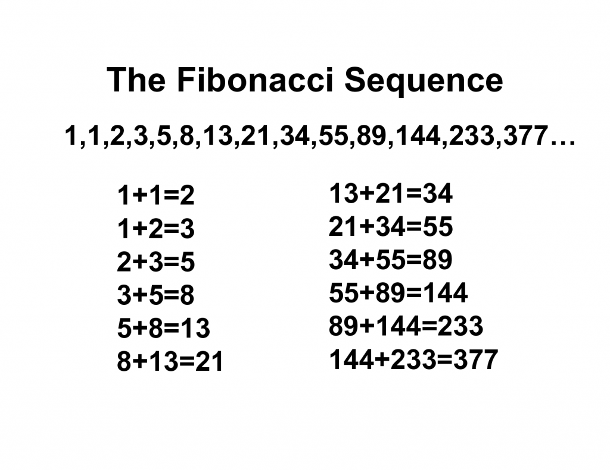

နောက်ပိုင်းကျတော့ plasma state ဆိုပြီး ပလတ်စမာ အခြေအနေ ကိုလဲ သိပ္ပံ ပညာရှင်တွေ ရှာဖွေ တွေ့ရှိ ခဲ့ကြပါတယ်။ ပလတ်စမာ ဆိုတာက ဒြပ်ဝတ္ထု တွေကို အလွန် ပူပြင်းအောင် လုပ်လိုက်ရင် သူ့ရဲ့ အက်တမ်တွေ ကနေ အီလက်ထရွန်တွေဟာ လွတ်ထွက်သွားပြီး အီလက်ထရွန် ဓါတ်ငွေ့တိမ်တိုက်တွေ အဖြစ် ပြောင်းသွားတဲ့ အဆင့် ဖြစ်ပါတယ်။
ဒါမျိုးကို ကမ္ဘာပေါ်မှာ မိုးကြိုးပစ်တဲ့ အခါမျိုးမှာ တွေ့ရလေ့ ရှိပြီး အာကာသ ထဲမှာတော့ နေ နဲ့ ကြယ်တွေရဲ့ အတွင်းပိုင်းနဲ့ နက်ဗြူလာ ဓါတ်ငွေ့ တိမ်တိုက်ကြီးတွေ ထဲမှာ တွေ့ရလေ့ ရှိပါတယ်။
အခုတခါ ရူပဗေဒ ပညာရှင် တွေဟာ ပဉ္စမမြောက် ဒြပ်အခြေအနေ တစ်ခုကို ရှာဖွေ တွေ့ရှိ ခဲ့ကြပါတယ်။ အခု ရှာဖွေ တွေ့ရှိတဲ့ ဒြပ်အခြေအနေ ရဲ့ ထူးခြားချက် ကတော့ သူ့မှာ အချိန် ဒိုင်မင်းရှင်း နှစ်ခု ပါဝင်နေတာပဲ ဖြစ်ပါတယ်။
အခု ဒြပ်အခြေ အနေကို ကွမ်တမ် ကွန်ပြူတာ တီထွင် ဖန်တီးဖို့ သုတေသန ပြုလုပ်နေ ကြတဲ့ ရူပဗေဒ ပညာရှင် များက ရှာတွေ့ခဲ့ ကြတာ ဖြစ်ပါတယ်။ သူတို့ဟာ ကွမ်တမ် ကွန်ပြူတာ အတွင်းက အက်တမ်တွေကို လေဆာတန်းနဲ့ ထိုးလိုက်တဲ့ အခါမှာ အခု ဒြပ်အခြေအနေ ကို ရှာဖွေ တွေ့ရှိ ခဲ့ကြတာပဲ ဖြစ်ပါတယ်။
ဆက်စပ်ဆောင်းပါး – အလင်းကို ရပ်လိုက်ဖို့ ဖြစ်နိုင်သလား
ပုံမှန်ဆိုရင် ကျွန်တော်တို့ စကြာဝဠာ အတွင်းမှာ အချိန်ဟာ လမ်းကြောင်း တစ်ခုတည်း ကိုပဲ (အနာဂတ် ကိုပဲ) ဦးတည်ပြီး စီးဆင်း နေပါတယ်။ ဒီ ဒြပ်အခြေအနေ အဆင့်မှာလဲ အချိန်ဟာ အနာဂတ် ကိုပဲ ဦးတည် စီးဆင်း နေပါတယ်။ ဒါပေမယ့် စီးဆင်းနေတဲ့ အချိန် ဒိုင်မင်းရှင်းဟာ တစ်ခုတည်း မဟုတ်ပဲ နှစ်ခု ဖြစ်နေတာကို ထူးဆန်းစွာ ရှာဖွေ တွေ့ရှိ ခဲ့ကြပါတယ်။
ဒီ ပညာရှင် တွေဟာ သူတို့ရဲ့ တွေ့ရှိချက်ကို သုတေသန ဂျာနယ်ကြီး တစ်စောင်ဖြစ်တဲ့ Nature ဂျာနယ်မှာ တင်ပြ ထားကြပါတယ်။
အခု တွေ့ရှိချက်ဟာ ကွမ်တမ် ကွန်ပြူတာ ဖန်တီးမှု အတွက် အရေးပါတဲ့ တွေ့ရှိမှု တစ်ရပ် ဖြစ်တယ်လို့ ဆိုပါတယ်။ ဒီ ဒြပ်အခြေအနေမှာ သိမ်းဆည်းထားတဲ့ ကွမ်တမ် အချက်အလက် တွေဟာ ပုံမှန် အခြား အခြေအနေမှာ သိမ်းဆည်းထားတဲ့ ကွမ်တမ် အချက်အလက် တွေထက် ပိုပြီး ပျက်စီးမှုဒါဏ် ခံနိုင်ရည် ရှိလိမ့်မယ်လို့ ဆိုပါတယ်။
အခုအချိန် အထိ ကွမ်တမ် ကွန်ပြူတာ တွေအတွင်း သိမ်းဆည်းထားတဲ့ အချက်အလက် တွေဟာ တည်ငြိမ်မှု မရှိ ကြသေးပါဘူး။ အချိန် ကြာလာတာနဲ့ အမျှ ကွမ်တမ် ကွန်ပြူတာ တွေက သိမ်းဆည်းထားတဲ့ အချက်အလက် တွေဟာ ပျက်စီး ကုန်ကြပါတယ်။
အခု တွေ့ရှိချက်ကို အမေရိကန် ပြည်ထောင်စုနဲ့ ကနေဒါက ရူပဗေဒ ပညာရှင် တွေက ရှာဖွေ တွေ့ရှိခဲ့ ကြတာ ဖြစ်ပါတယ်။ သူတို့ဟာ ၅ နှစ်ကျော် ကြာအောင် သုတေသန စမ်းသပ်မှုတွေ အပြီးမှာ အခုလို တွေ့ရှိခဲ့ ကြတာ ဖြစ်ပါတယ်။
ဆက်စပ်ဆောင်းပါး – အချိန်ခရီးသွားပြီး အတိတ်ကို ပြောင်းလဲနိုင်မလား
ဒီ သုတေသနမှာ ယစ်တာဘီယံ ဒြပ်စင် (ytterbium) အက်တမ် ၁၀ ခု ပါဝင်တဲ့ ကွမ်တမ် ကွန်ပြူတာ တစ်ခု အတွင်းမှာ စမ်းသပ် ခဲ့ကြတာ ဖြစ်ပါတယ်။
ဒီ အက်တမ် တစ်လုံးချင်း စီကို လျှပ်စစ် ဓါတ်အား ဝင်နေတဲ့ အိုင်းယွန်း တွေ အဖြစ် အရင်ဆုံး ပြောင်းလဲ ခဲ့ကြပါတယ်။ ဒီ့နောက် ဒီ အိုင်းယွန်း တစ်လုံးခြင်း စီကို လျှပ်စစ် သံလိုက် စက်ကွင်း တွေအတွင်း ထည့်သွင်းပြီး ထိန်းချုပ် ထားခဲ့ပါတယ်။
ဒီ အိုင်းယွန်း တွေ တစ်လုံးချင်း စီကို လေဆာရောင်ခြည် တန်းတွေနဲ့ ပစ်ခတ်ပြီး သူတို့ကို ကွမ်တမ် မှန်ဉာဏ် တွေအဖြစ် ပြောင်းလဲ ခဲ့ကြပါတယ်။ ဒီ ကွမ်တမ် မှတ်ဉာဏ် တစ်ခုချင်း စီကို qubit (quantum bit) လို့ ခေါ်ပါတယ်။
သာမန် ကွန်ပြူတာ တစ်လုံး မှာ မှတ်ဉာဏ်တွေကို ဘစ် (bit) ဆိုတဲ့ မှတ်ဉာဏ်ကွက်လပ် လေးတွေနဲ့ သိမ်းဆည်း ထားပါတယ်။ ဒီ bit တစ်ခုဟာ တစ် (သို့) သုည တန်ဖိုး တစ်ခုခု ရှိကြပါတယ်။ (ကွန်ပြူတာဟာ ၁ နဲ့ သုည နှစ်မျိုးပဲ နားလည်တာပါ။)
ဒါပေမယ့် ဒီ ကျူဘစ် လေးတွေ ကျတော့ သာမန် ကွန်ပြူတာ မှတ်ဉာဏ် ကွက်လပ်နဲ့ မတူပဲ တမူ ထူးခြား နေပါတယ်။ ဒီ ကျူဘစ် တစ်ခုဟာ တစ် (သို့) သုည အပြင် တစ်ချိန် တည်းမှာ တစ် ရော သုညရော တန်ဖိုး နှစ်ခု လုံးကိုလဲသိမ်းဆည်း ထားနိုင်ပါတယ်။ (ကွမ်တမ် အမှုန်တွေဟာ တစ်ချိန် တည်းမှာ နေရာ နှစ်နေရာ ရှိနေနိုင် သလို တစ်နေရာ တည်းမှာလဲ အခြေအနေ နှစ်မျိုးနဲ့ ရှိနေနိုင် ပါတယ်)
ဒီလို တစ်ချိန်တည်း တန်ဖိုး နှစ်ခု ပြိုင်တူ သိမ်းဆည်း ထားနိုင်တာမို့ ကွမ်တမ် ကွန်ပြူတာ တွေဟာ သာမန် ကွန်ပြူတာ တွေထက် အဆများစွာ ပိုပြီး လျှင်မြန်တယ်လို့ ဆိုပါတယ် (အောင်မြင် ခဲ့ရင်ပေါ့လေ၊ အခုထိတော့စမ်းသပ်နေ ဆဲပဲ ရှိပါသေးတယ်။)
ဒီလို အစွမ်းထက်တဲ့ ကွန်ပြူတာ တည်ထွင်နိုင်ဖို့ မျှော်လင့်ချက်ကြီးတွေ ရှိနေပေမယ့် ပြဿနာ ကြီး တစ်ခုက ရှိနေပါတယ်။ အဲ့တာကတော့ ကွမ်တမ် ကွန်ပြူတာ တွေရဲ့ အထဲက ကျူဘစ် တွေဟာ ပြင်ပက အမိန့်ပေး ညွှန်ကြားမှု မရှိပဲ သူတို့ အချင်းချင်း စကားပြော နိုင်ကြတာပဲ ဖြစ်ပါတယ်။
ဒီလို အချင်းချင်း စကားပြောနိုင်ခြင်းရဲ့ အကျိုးဆက် ကတော့ ဒီ ကျူဘစ်တွေဟာ သူတို့ သိမ်းဆည်းထားတဲ့ တန်ဖိုးတွေကို အချင်းချင်း စကားပြော ရင်း ပြောင်းပစ် လိုက်ကြတာပဲ ဖြစ်ပါတယ်။ ဒီတော့ သူတို့ထဲကို အချက်အလက်တွေ ထည့်သိမ်းထားရင် သိပ်မကြာဘူး တန်ဖိုးတွေ ပြောင်းကုန် တော့တာပါပဲ။ (ကျပ်ငွေ တစ်သန်း လို့ ထည့်မှတ်ထားပြီး ခနနေ ပြန်ကြည့်တော့ ကျပ် တစ်ထောင် ဖြစ်နေတဲ့ ဥပမာ နဲ့ စဉ်းစား ကြည့်ပေါ့ဗျာ။)
အခု ပညာရှင် တွေဟာ ဒီ ကွမ်တမ် မှတ်ဉာဏ် ကျူဘစ် တွေ ပိုမို တည်ငြိမ်အောင် ပြုလုပ်နိုင်မယ့် နည်းလမ်းကို ရှာဖွေ နေခဲ့ကြတာ ဖြစ်ပါတယ်။
သူတို့ဟာ ကွမ်တမ် ကျူဘစ် တွေကို လေဆာ အလင်းတန်း တွေနဲ့ တဖြတ်ဖြတ် ထိုးပြီး စမ်းသပ် ကြည့်ခဲ့ ကြပါတယ်။ အချိန်မှန် တဖြတ်ဖြတ် ခတ်နေတဲ့ လေဆာတန်းတွေ ထိုးပြီး စမ်းသပ် ကြည့်တဲ့ အခါမှာ ဒီ ကျူဘစ်တွေရဲ့ သက်တမ်း ပိုရှည် လာတာကို တွေ့ရှိ ခဲ့ကြပါတယ်။
နောက်တဆင့် အနေနဲ့ သူတို့ဟာ ထိုးတဲ့ လေဆာ လှိုင်းတွေကို သင်္ချာ ကိန်းတန်း တစ်ခု အတိုင်း ထိုးကြည့် ကြပါတယ်။ ဆိုလိုတာ တစ်ချက် ထိုးလိုက် နှစ်ချက် ထိုးလိုက် စသဖြင့် တဖြတ်ဖြတ် ခတ်တဲ့ အကြိမ်ရေကို တိုးထိုး သွားတာ ဖြစ်ပါတယ်။ (သူတို့က လေဆာ တန်းကို ဆက်တိုက် တောက်လျှောက် ထိုးတာ မဟုတ်ပဲ ကင်မရာက ဖလက်ရှ် လို တဖြတ်ဖြတ် ပြတ်တောင်း ပြတ်တောင်း ထိုးတာ ဖြစ်ပါတယ်။)
အခု ထိုးတဲ့ အကြိမ်ကိုတော့ Fibonacci sequence အတိုင်း ထိုးခဲ့ ကြပါတယ်။ ဒီ သင်္ချာ ကိန်းတန်းမှာ သူ့ရှေ့က ဂဏန်း နှစ်လုံးရဲ့ တန်ဖိုးကို ပေါင်းရင် သူ့နောက်က ဂဏန်းရဲ့ တန်ဖိုးကို ရတဲ့ ကိန်းတန်း ဖြစ်ပါတယ် (အောက် ပုံကြည့်)။

အခုလို အချိန် ဒိုင်မင်းရှင်း နှစ်ခု ဖြစ်လာတဲ့ အတွက် ကျူဘစ် တွေရဲ့ သက်တမ်းဟာလဲ ၃ ဆ လောက် ပိုရှည် လာပါတယ်။ မူလ အချိန် ဒိုင်မင်းရှင်း တစ်ခုပဲ ရှိစဉ်က ကျူဘစ် တစ်ခုဟာ သက်တမ်း ၁.၅ စက္ကန့် လောက်ပဲ ခံပါတယ်။ ဒါပေမယ့် အချိန် ဒိုင်မင်းရှင်း နှစ်ခု ဖြစ်လာတဲ့အ ခါမှာ ကျူဘစ်တွေရဲ့ ပျမ်းမျှ သက်တမ်းဟာ ၅.၅ စက္ကန့်ထိ ရှည်ကြာ လာပါတယ်။
ကွမ်တမ် ကွန်ပြူတာ တွေဟာ အလွန် ရှုပ်ထွေးပြီး အခု အချိန်အထိ စမ်းသပ်ကာလ အစောပိုင်း အဆင့်မှာပဲ ရှိပါသေးတယ်။ ဒီတော့ အခု တွေ့ရှိချက် တွေကို လက်တွေ့ အသုံးချ နိုင်ဖို့ ဆိုတာကတော့ အဝေးကြီး လိုလိမ့် အုံးမယ်လို့ သုတေသီ တွေက ပြောပါတယ်။
Ref: This Weird New Phase of Matter Seems to Occupy 2 Time Dimensions | Science Alert